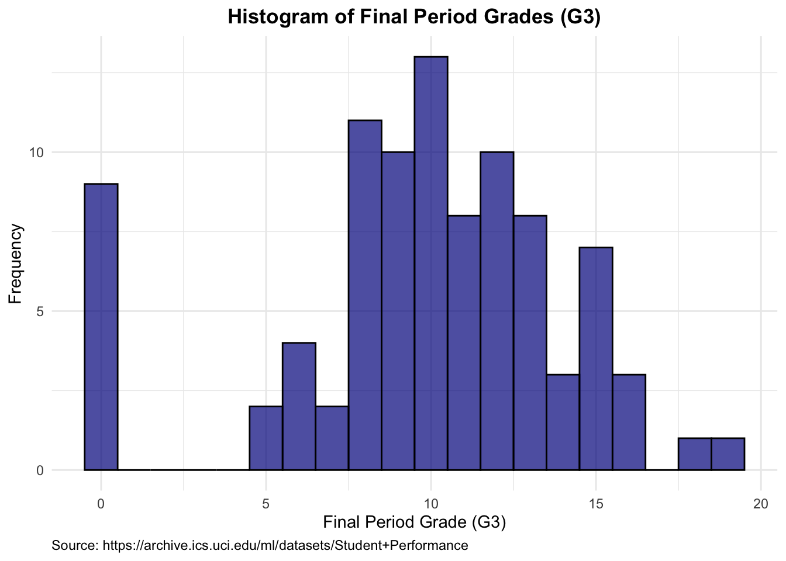

results <- read_csv("epl/epl_results.csv",show_col_types = FALSE)
teams <- read_csv("epl/epl_teams.csv",show_col_types = FALSE)team_01_tidyverse
library(tidyverse)
library(gt)Task 1: Converting EPL Football Results into a League Table
# Set CRAN mirror non-interactively
options(repos = c(CRAN = "https://cran.rstudio.com/"))
# Install and load the tidyverse package
if (!requireNamespace("tidyverse", quietly = TRUE)) {
install.packages("tidyverse")
}
library(tidyverse)
library(gt)
# Read the CSV files into tibbles
epl_results <- read_csv("epl/epl_results.csv")Rows: 20 Columns: 21
── Column specification ────────────────────────────────────────────────────────
Delimiter: ","
chr (21): home_team, ars, avl, bou, bha, bur, che, cry, eve, lei, liv, mci, ...
ℹ Use `spec()` to retrieve the full column specification for this data.
ℹ Specify the column types or set `show_col_types = FALSE` to quiet this message.epl_teams <- read_csv("epl/epl_teams.csv")Rows: 20 Columns: 2
── Column specification ────────────────────────────────────────────────────────
Delimiter: ","
chr (2): name, abbr
ℹ Use `spec()` to retrieve the full column specification for this data.
ℹ Specify the column types or set `show_col_types = FALSE` to quiet this message.# Print the datasets to verify
print(epl_results)# A tibble: 20 × 21
home_team ars avl bou bha bur che cry eve lei liv mci
<chr> <chr> <chr> <chr> <chr> <chr> <chr> <chr> <chr> <chr> <chr> <chr>
1 ars - 3-2 1-0 1-2 2-1 1-2 2-2 3-2 1-1 2-1 0-3
2 avl 1-0 - 1-2 2-1 2-2 1-2 2-0 2-0 1-4 1-2 1-6
3 bou 1-1 2-1 - 3-1 0-1 2-2 0-2 3-1 4-1 0-3 1-3
4 bha 2-1 1-1 2-0 - 1-1 1-1 0-1 3-2 0-2 1-3 0-5
5 bur 0-0 1-2 3-0 1-2 - 2-4 0-2 1-0 2-1 0-3 1-4
6 che 2-2 2-1 0-1 2-0 3-0 - 2-0 4-0 1-1 1-2 2-1
7 cry 1-1 1-0 1-0 1-1 0-1 2-3 - 0-0 0-2 1-2 0-2
8 eve 0-0 1-1 1-3 1-0 1-0 3-1 3-1 - 2-1 0-0 1-3
9 lei 2-0 4-0 3-1 0-0 2-1 2-2 3-0 2-1 - 0-4 0-1
10 liv 3-1 2-0 2-1 2-1 1-1 5-3 4-0 5-2 2-1 - 3-1
11 mci 3-0 3-0 2-1 4-0 5-0 2-1 2-2 2-1 3-1 4-0 -
12 mun 1-1 2-2 5-2 3-1 0-2 4-0 1-2 1-1 1-0 1-1 2-0
13 new 0-1 1-1 2-1 0-0 0-0 1-0 1-0 1-2 0-3 1-3 2-2
14 nor 2-2 1-5 1-0 0-1 0-2 2-3 1-1 0-1 1-0 0-1 3-2
15 shu 1-0 2-0 2-1 1-1 3-0 3-0 1-0 0-1 1-2 0-1 0-1
16 sou 0-2 2-0 1-3 1-1 1-2 1-4 1-1 1-2 0-9 1-2 1-0
17 tot 2-1 3-1 3-2 2-1 5-0 0-2 4-0 1-0 3-0 0-1 2-0
18 wat 2-2 3-0 0-0 0-3 0-3 1-2 0-0 2-3 1-1 3-0 0-4
19 whu 1-3 1-1 4-0 3-3 0-1 3-2 1-2 1-1 1-2 0-2 0-5
20 wol 0-2 2-1 1-0 0-0 1-1 2-5 2-0 3-0 0-0 1-2 3-2
# ℹ 9 more variables: mun <chr>, new <chr>, nor <chr>, shu <chr>, sou <chr>,
# tot <chr>, wat <chr>, whu <chr>, wol <chr>print(epl_teams)# A tibble: 20 × 2
name abbr
<chr> <chr>
1 Arsenal ars
2 Aston Villa avl
3 Bournemouth bou
4 Brighton & Hove Albion bha
5 Burnley bur
6 Chelsea che
7 Crystal Palace cry
8 Everton eve
9 Leicester City lei
10 Liverpool liv
11 Manchester City mci
12 Manchester United mun
13 Newcastle United new
14 Norwich City nor
15 Sheffield United shu
16 Southampton sou
17 Tottenham Hotspur tot
18 Watford wat
19 West Ham United whu
20 Wolverhampton Wanderers wol Task 1: Converting EPL Football Results into a League Table
# Convert match results to points, goal difference, and goals scored
results_long <- epl_results %>%
pivot_longer(cols = -home_team, names_to = "away_team", values_to = "result") %>%
filter(result != "-") %>%
separate(result, into = c("home_goals", "away_goals"), sep = "-", convert = TRUE) %>%
mutate(
home_points = case_when(
home_goals > away_goals ~ 3,
home_goals < away_goals ~ 0,
TRUE ~ 1
),
away_points = case_when(
home_goals > away_goals ~ 0,
home_goals < away_goals ~ 3,
TRUE ~ 1
),
home_goal_diff = home_goals - away_goals,
away_goal_diff = away_goals - home_goals
)
# Compute statistics for home and away teams
home_stats <- results_long %>%
group_by(home_team) %>%
summarize(
points = sum(home_points),
goal_diff = sum(home_goal_diff),
goals_for = sum(home_goals),
goals_against = sum(away_goals)
) %>%
left_join(epl_teams, by = c("home_team" = "abbr")) %>%
rename(team = name)
away_stats <- results_long %>%
group_by(away_team) %>%
summarize(
points = sum(away_points),
goal_diff = sum(away_goal_diff),
goals_for = sum(away_goals),
goals_against = sum(home_goals)
) %>%
left_join(epl_teams, by = c("away_team" = "abbr")) %>%
rename(team = name)
# Combine home and away stats
league_table <- home_stats %>%
select(team, points, goal_diff, goals_for, goals_against) %>%
bind_rows(away_stats %>% select(team, points, goal_diff, goals_for, goals_against)) %>%
group_by(team) %>%
summarize(
points = sum(points),
goal_diff = sum(goal_diff),
goals_for = sum(goals_for)
) %>%
arrange(desc(points), desc(goal_diff), desc(goals_for)) %>%
mutate(rank = row_number()) %>%
select(rank, team, points, goal_diff, goals_for)
# Print the league table
print(league_table)# A tibble: 20 × 5
rank team points goal_diff goals_for
<int> <chr> <dbl> <int> <int>
1 1 Liverpool 99 52 85
2 2 Manchester City 81 67 102
3 3 Manchester United 66 30 66
4 4 Chelsea 66 15 69
5 5 Leicester City 62 26 67
6 6 Tottenham Hotspur 59 14 61
7 7 Wolverhampton Wanderers 59 11 51
8 8 Arsenal 56 8 56
9 9 Sheffield United 54 0 39
10 10 Burnley 54 -7 43
11 11 Southampton 52 -9 51
12 12 Everton 49 -12 44
13 13 Newcastle United 44 -20 38
14 14 Crystal Palace 43 -19 31
15 15 Brighton & Hove Albion 41 -15 39
16 16 West Ham United 39 -13 49
17 17 Aston Villa 35 -26 41
18 18 Bournemouth 34 -25 40
19 19 Watford 34 -28 36
20 20 Norwich City 21 -49 26Task 2: Finding and Visualizing a Real-World Dataset
# Improve the visualization of the league table2.1 Use R Code to Validate Conditions C, D, and E for Your Data
Loading the Dataset
# Load the dataset from local file
student_data <- read.csv("data/student-mat.csv", header = TRUE, sep = ";")This data (Source) approaches student achievement in secondary education (math) of two Portuguese schools. The data attributes include student grades, demographic, social, and school-related features, and it was collected by using school reports and questionnaires.
Validating Condition C: Number of Observations
# Validate condition C: Number of observations
num_observations <- student_data |>
nrow()
cat("Number of observations:", num_observations, "\n")Number of observations: 395 We check the number of observations in the dataset. The output will display the total number of rows (observations). The dataset should contain between 20 and 200 observations.
Validating Condition D: At Least Two Quantitative Variables
# Validate condition D: At least two quantitative variables
quant_vars <- student_data |>
select(where(is.numeric)) |>
names()
cat("Quantitative variables:", paste(quant_vars, collapse = ", "), "\n")Quantitative variables: age, Medu, Fedu, traveltime, studytime, failures, famrel, freetime, goout, Dalc, Walc, health, absences, G1, G2, G3 We identify and list all quantitative variables in the dataset. This ensures that we have at least two quantitative variables to use in our scatter plot.
Validating Condition E: Identical or Nearly Identical Values
# Validate condition E: Identical or nearly identical values
duplicated_points <- student_data |>
group_by(G1, G3) |>
filter(n() > 1) |>
ungroup()
if (nrow(duplicated_points) > 0) {
cat("Condition E validated: There are duplicated points.\n")
} else {
cat("Condition E not validated: No duplicated points found.\n")
}Condition E validated: There are duplicated points.# Display some duplicated points
gt_preview(duplicated_points)| school | sex | age | address | famsize | Pstatus | Medu | Fedu | Mjob | Fjob | reason | guardian | traveltime | studytime | failures | schoolsup | famsup | paid | activities | nursery | higher | internet | romantic | famrel | freetime | goout | Dalc | Walc | health | absences | G1 | G2 | G3 | |
|---|---|---|---|---|---|---|---|---|---|---|---|---|---|---|---|---|---|---|---|---|---|---|---|---|---|---|---|---|---|---|---|---|---|
| 1 | GP | F | 18 | U | GT3 | A | 4 | 4 | at_home | teacher | course | mother | 2 | 2 | 0 | yes | no | no | no | yes | yes | no | no | 4 | 3 | 4 | 1 | 1 | 3 | 6 | 5 | 6 | 6 |
| 2 | GP | F | 17 | U | GT3 | T | 1 | 1 | at_home | other | course | father | 1 | 2 | 0 | no | yes | no | no | no | yes | yes | no | 5 | 3 | 3 | 1 | 1 | 3 | 4 | 5 | 5 | 6 |
| 3 | GP | F | 15 | U | LE3 | T | 1 | 1 | at_home | other | other | mother | 1 | 2 | 3 | yes | no | yes | no | yes | yes | yes | no | 4 | 3 | 2 | 2 | 3 | 3 | 10 | 7 | 8 | 10 |
| 4 | GP | F | 15 | U | GT3 | T | 4 | 2 | health | services | home | mother | 1 | 3 | 0 | no | yes | yes | yes | yes | yes | yes | yes | 3 | 2 | 2 | 1 | 1 | 5 | 2 | 15 | 14 | 15 |
| 5 | GP | M | 16 | U | LE3 | T | 4 | 3 | services | other | reputation | mother | 1 | 2 | 0 | no | yes | yes | yes | yes | yes | yes | no | 5 | 4 | 2 | 1 | 2 | 5 | 10 | 15 | 15 | 15 |
| 6..364 | |||||||||||||||||||||||||||||||||
| 365 | MS | M | 19 | U | LE3 | T | 1 | 1 | other | at_home | course | father | 1 | 1 | 0 | no | no | no | no | yes | yes | yes | no | 3 | 2 | 3 | 3 | 3 | 5 | 5 | 8 | 9 | 9 |
We check for duplicated points in the dataset, ensuring that there are pairs of data points with identical or nearly identical values. This is important for demonstrating strategies to mitigate overplotting. We also display a few rows of the duplicated points to visually confirm their presence.
2.2 Plot 1 – Generate a Scatter Plot Using geom_point()
Creating a Basic Scatter Plot
# Plot 1: Basic scatter plot
scatter_plot <- student_data |>
ggplot(aes(x = G1, y = G3)) +
geom_point(color = "darkred", alpha = 0.7) +
labs(
title = "Scatter Plot of First vs Final Period Grades",
x = "First Period Grade (G1)",
y = "Final Period Grade (G3)",
caption = ("Source: https://archive.ics.uci.edu/ml/datasets/Student+Performance")) +
theme_minimal() +
theme(
plot.title = element_text(hjust = 0.5, face = "bold"),
plot.caption = element_text(hjust = 0)
)
print(scatter_plot)
We create a basic scatter plot to visualize the relationship between the first period grades (G1) and the final period grades (G3). The points are colored dark red and are slightly transparent to help with visibility.
2.3 Plot 2 – Create an Improved Plot to Mitigate Overplotting
Creating a Scatter Plot with Jitter
# Plot 2: Scatter plot with jitter to reduce overplotting
scatter_plot_jitter <- student_data |>
ggplot(aes(x = G1, y = G3)) +
geom_jitter(width = 0.2, height = 0.2, color = "darkblue", alpha = 0.7) +
labs(
title = "Scatter Plot with Jitter of First vs Final Period Grades",
x = "First Period Grade (G1)",
y = "Final Period Grade (G3)",
caption = ("Source: https://archive.ics.uci.edu/ml/datasets/Student+Performance")) +
theme_minimal() +
theme(
plot.title = element_text(hjust = 0.5, face = "bold"),
plot.caption = element_text(hjust = 0)
)
print(scatter_plot_jitter)
We create an improved scatter plot using geom_jitter() to add slight random noise to the data points. This helps to reduce overplotting by spreading out points that have identical or nearly identical values. The points are colored dark blue and are semi-transparent.
2.4 Plot 3 – Add a Trend Curve in Plot 2 and Discuss Insights
Adding a Trend Curve to the Scatter Plot with Jitter
# Plot 3: Scatter plot with jitter and trend curve
scatter_plot_trend <- student_data |>
ggplot(aes(x = G1, y = G3)) +
geom_jitter(width = 0.2, height = 0.2, color = "darkblue", alpha = 0.7) +
geom_smooth(method = "lm", se = FALSE, color = "red", linewidth = 1) +
labs(
title = "Scatter Plot with Jitter and Trend Curve of First vs Final Period Grades",
x = "First Period Grade (G1)",
y = "Final Period Grade (G3)",
caption = ("Source: https://archive.ics.uci.edu/ml/datasets/Student+Performance")) +
theme_minimal() +
theme(
plot.title = element_text(hjust = 0.5, face = "bold"),
plot.caption = element_text(hjust = 0)
)
print(scatter_plot_trend)`geom_smooth()` using formula = 'y ~ x'
We enhance the scatter plot by adding a trend line using geom_smooth() with the method set to linear model (lm). The trend line helps to visualize the overall relationship between the first period grades (G1) and the final period grades (G3). The trend line is colored red and is slightly thicker for better visibility.
Discussion and Insights
The trend curve in Plot 3 shows a positive correlation between the first period grades (G1) and the final period grades (G3). This indicates that students who perform well initially tend to maintain their performance throughout the course. The use of jitter in the plot helps to mitigate the effect of overplotting, making it easier to see the distribution of data points.
Task 3: Visualizing Michelson’s Speed-of-Light Measurements
3.1 Convert Expt Column to Factor
…
3.2 Plot 1 – Create a Scatter Plot displaying Experiment Number vs. Measured Speeds
…
3.3 Plot 2 – Create a Box Plot Measured Speeds with One Box Experiment
…
3.4 Plot 3 – Add a Violin Plot in Plot 2
…
3.5 Plot 4 – Create a Faceted Plot Containing 5 Histograms
…
3.6 Discuss Your Choice Among the 4 Visualization Plots
…